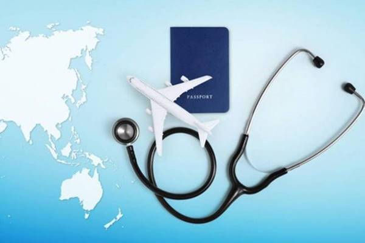

Tıp (Medikal) Turizmi
Medikal turizm, tıp turizmi, tıbbi seyahat, sağlık turizmi veya küresel sağlık hizmetleri olarak da adlandırılmaktadır. Medikal turizm, tıbbi bakım için ikamet edilen ülke dışına seyahat etme süreci olarak tanımlanabilir.
Türkiye, sağlık ve sağlık turizmi çeşitleriyle son yıllarda hızlı bir şekilde büyüme göstermektedir. Türkiye, turizmden elde ettiği gelir seviyesini artırmak, daha fazla turist çekebilmek amacıyla turizme yatırımlar yaparken aynı zamanda turizmde çeşitlendirme politikası uygulamaktadır. Turizmin çeşitlendirilmesinde en önemli turizm türünden birisini medikal turizm oluşturmaktadır. Türkiye’nin, uzman hekimleri, tecrübeli sağlık personeli, tıbbi teknolojisi, hizmet kalitesi, misafirperverliği, alt ve üst yapı olanakları ile medikal turizmde büyük bir potansiyeli bulunmaktadır. Bu çalışmanın amacı sağlık turizmi çeşitlerinden olan medikal turizmin Türkiye’deki mevcut durumunu incelemek, medikal turizmde sorunların olup olmadığını belirlemek ve öneriler geliştirmektir. Bu amaç kapsamında Türkiye genelinde 206 özel hastane yöneticisiyle anket yöntemi kullanılarak veri toplanmıştır. Çalışma kapsamında hastanelerin birçoğunda medikal turizm anlayışının oluştuğu görülmüştür. Tanıtım problemleri, olumsuz ülke imajı, Türkiye’de medikal turizmin gelişimine olumsuz etki eden unsurlar olarak belirlenirken; sağlık mevzuatı sorunları, mali destek yetersizliği ve nitelikli personel sıkıntısı yöneticiler tarafından sorun olarak belirlenmiştir. Yapılan içerik analizi sonrasında medikal turizmin gelişimi için hastane yöneticileri tarafından yapılan öneriler tanıtımın yapılması, ortak ücret tarifesi oluşturulması ve akreditasyona önem verilmesi konuları ön plana çıkmıştır. Türkiye’nin medikal turizmde pazar payını artırabilmesi amacıyla yurt dışında tanıtımı etkin ve aktif olarak yapması, yabancı dil bilen sağlık personel sayısının ve niteliğinin artırılması, alt yapı olanaklarını geliştirmesi ve akreditasyona önem verilmesi gerekmektedir.